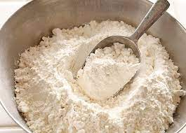
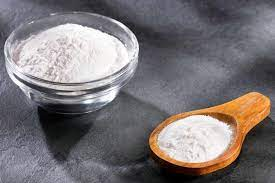
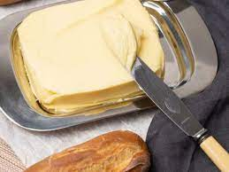
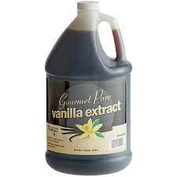
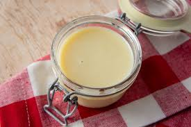
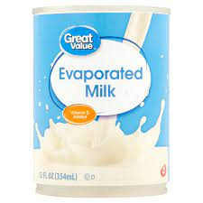

Ingredients:
-  1 cup all-purpose flour
-  1 1/2 teaspoons baking powder
-  1/4 cup unsalted butter, softened
- 3/4 cup white sugar
 5 eggs
5 eggs-  1/2 teaspoon vanilla extract
- 1 cup whole milk
-  1 (14 oz) can sweetened condensed milk
-  1 (12 oz) can evaporated milk
- 1 1/2 cups heavy cream